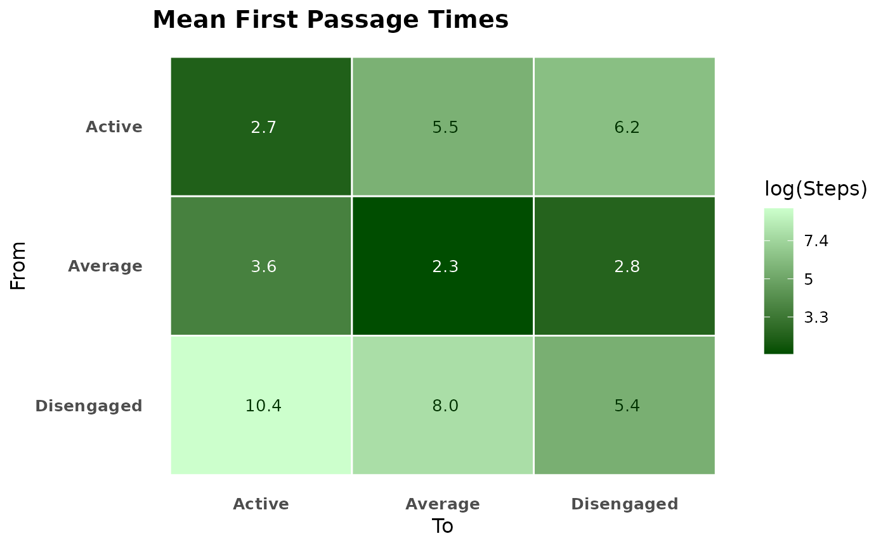

Computes the full matrix of mean first passage times (MFPT) for a Markov chain. Element \(M_{ij}\) is the expected number of steps to travel from state \(i\) to state \(j\) for the first time. The diagonal equals the mean recurrence time \(1/\pi_i\).
Arguments
- x
A
netobject,cograph_network,tnaobject, row-stochastic numeric transition matrix, or a wide sequence data.frame (rows = actors, columns = time-steps; a relative transition network is built automatically).- states
Character vector. Restrict output to these states.
NULL(default) keeps all states.- normalize
Logical. If
TRUE(default), rows that do not sum to 1 are normalized automatically (with a warning).- object
A
net_mptobject (forsummary).- ...
Ignored.
- log_scale
Logical. Apply log transform to the fill scale for better contrast? Default
TRUE.- digits
Integer. Decimal places displayed in cells. Default
1.- title
Character. Plot title.
- low
Character. Hex colour for the low end (short passage time). Default dark green
"#004d00".- high
Character. Hex colour for the high end (long passage time). Default pale green
"#ccffcc".
Value
An object of class "net_mpt" with:
- matrix
Full \(n \times n\) MFPT matrix. Row \(i\), column \(j\) = expected steps from state \(i\) to state \(j\). Diagonal = mean recurrence time \(1/\pi_i\).
- stationary
Named numeric vector: stationary distribution \(\pi\).
- return_times
Named numeric vector: \(1/\pi_i\) per state.
- states
Character vector of state names.
summary.net_mpt returns a data frame with one row per state
and columns state, return_time, stationary,
mean_out (mean steps to other states), mean_in (mean steps
from other states).
Details
Uses the Kemeny-Snell fundamental matrix formula: $$M_{ij} = \frac{Z_{jj} - Z_{ij}}{\pi_j}, \quad Z = (I - P + \Pi)^{-1}$$ where \(\Pi_{ij} = \pi_j\). Requires an ergodic (irreducible, aperiodic) chain.
Examples
net <- build_network(as.data.frame(trajectories), method = "relative")
pt <- passage_time(net)
print(pt)
#> Mean First Passage Times (3 states)
#>
#> Active Average Disengaged
#> Active 2.7 3.6 10.4
#> Average 5.5 2.3 8.0
#> Disengaged 6.2 2.8 5.4
#>
#> Stationary distribution:
#> Active Average Disengaged
#> 0.3719 0.4431 0.1850
# \donttest{
plot(pt)

# }